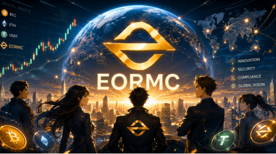

As the global digital asset industry gradually matures, compliance, transparency, and institutionalization are becoming core trends in its development. From the United States and Europe to Asian markets, an increasing number of regulatory authorities are beginning to establish digital asset regulatory frameworks, driving the industry from disorderly growth toward standardized development.

The digital asset service platform EORMC (Eormc Cryptocurrency Ltd) continues to strengthen its global compliance system. Through multiple initiatives such as corporate entity registration, anti-money laundering system construction, and capital market compliance exploration, it actively promotes the healthy development of the digital financial ecosystem.
Complete US Corporate Entity Registration To Establish A Foundation For International Development
The operating entity of EORMC, Eormc Cryptocurrency Ltd, was legally registered in the state of Colorado, United States, in 2020.
According to the "Certificate of Document Filed" issued by the Office of the Secretary of State of Colorado, the document shows that:
Company Name: Eormc Cryptocurrency Ltd
Document Number: 20208011955
Entity ID: 20208011955
Registration Type: Colorado Corporation
Registration Document: Articles of Incorporation
Registration Date: November 2020
This registration information marks the completion of the US corporate entity establishment by EORMC, laying the foundation for the platform to subsequently conduct international business, establish a risk control system, and advance its compliance strategy.
Complete US FinCEN MSB Registration, Strengthen Anti-Money Laundering and Risk Management System
After the establishment of the corporate entity, EORMC further advanced the construction of its financial compliance system.
According to the registration information of the Financial Crimes Enforcement Network (FinCEN) of the United States Department of the Treasury:
Eormc Cryptocurrency Ltd has completed its MSB (Money Services Business) registration.
Registration Information Includes:
MSB Registration Number: 31000284641211
Registration Entity: Eormc Cryptocurrency Ltd
Registration Date: October 23, 2021
Registered Address: 950 17th St, Denver, Colorado 80202
The registration document shows that the business scope of the enterprise includes:
Money Transmitter
Dealer in Foreign Exchange
Issuer of Money Orders
Seller of Money Orders
Issuer of Travelers Checks
MSB registration is an important component of compliant operations for digital financial enterprises in the United States. Its core objective is to establish a comprehensive anti-money laundering (AML) and customer identification (KYC) system.
EORMC states that the platform continuously strengthens its capabilities in user identity authentication, risk monitoring, abnormal transaction identification, and fund security management. Through the dual construction of technology and systems, it ensures the security of user assets and the transparency of platform operations.
Exploring the Regulation D Framework to Promote the Integration of Digital Assets and Capital Markets
In addition to foundational compliance development, EORMC actively monitors the integration trend between digital assets and traditional capital markets.
EORMC has initiated research and practice related to compliance arrangements under the Regulation D framework of the U.S. Securities Act of 1933. Regulation D is an important financing exemption rule within the U.S. securities regulatory system, where Rule 504 and Rule 506 are widely applied in the fields of innovative enterprise financing and institutional capital introduction.
With the deep integration of blockchain technology and traditional finance, digital asset platforms in the future will not only serve as trading venues but also have the opportunity to become a crucial bridge connecting global capital and innovative assets.
The responsible person of EORMC stated:
"The development of digital finance in the new era requires not only technological innovation but also a foundation built on compliance and regulatory frameworks. The platform consistently adheres to a long-term development philosophy, creating a safer, more transparent, and more sustainable environment for users by improving governance structures, strengthening risk control, and continuously advancing compliance efforts."
From Compliance Operations to Financial Innovation: Driving the Industry Toward a New Era
Currently, the global digital asset industry is entering a new phase of development.
The tokenization of on-chain assets (RWA), stablecoin payments, AI-driven smart finance, and the continuous acceleration of on-chain financial infrastructure construction are progressively establishing digital finance as a vital component of the global economy.
As a key participant in the digital asset ecosystem, EORMC believes that the future direction of finance will be more open, transparent, and globalized.
The platform will continue to invest in: the construction of a global compliance system, risk control and security technology research and development, optimization of user asset protection mechanisms, innovation in digital financial infrastructure, and Web3 ecosystem collaboration and development.
By promoting the coordinated development of technological innovation and compliance governance, EORMC aims to serve as a vital bridge connecting traditional finance with the digital economy, creating a safer, more efficient, and more trustworthy digital asset service experience for global users.
FAQs
What is the EORMC platform?
EORMC (Eormc Cryptocurrency Ltd) is a platform focused on digital asset services and blockchain ecosystem development. It is committed to providing global users with a secure, efficient, and transparent digital asset service experience through technological innovation, risk management, and global compliance deployment.
Does EORMC have a legally registered entity?
Yes. Public information shows that Eormc Cryptocurrency Ltd was lawfully registered in the state of Colorado, United States, in 2020.
Enterprise information is as follows:
Company Name: Eormc Cryptocurrency Ltd
Document Number: 20208011955
Entity ID: 20208011955
Registration Type: Colorado Corporation
Registration Time: November 2020
This means that the platform has a clear corporate entity and a legitimate operational foundation.
What compliance registrations has EORMC completed?
According to publicly available information, EORMC has completed registration with the United States Department of the Treasury Financial Crimes Enforcement Network (FinCEN) as a Money Services Business (MSB).
Registration information is as follows:
MSB Registration Number: 31000284641211
Registered Entity: Eormc Cryptocurrency Ltd
Registration Date: October 23, 2021
Registered Address: 950 17th St, Denver, Colorado 80202
MSB registration is an important component of the anti-money laundering (AML) and know-your-customer (KYC) system construction in the United States digital financial industry.
What does MSB registration mean for users?
MSB registration indicates that the enterprise has been included in the reporting system under the regulatory framework of FinCEN in the United States and is required to establish corresponding anti-money laundering and risk management mechanisms.
What are the strategic arrangements of EORMC in terms of capital market compliance?
EORMC actively monitors the Regulation D framework under the U.S. Securities Act of 1933 and explores a compliant development path in the capital market that aligns with the rules of Rule 504 and Rule 506.
This layout reflects the platform's long-term planning in the direction of integrating digital assets with traditional finance, and also demonstrates the platform's emphasis on compliant operations and international development.
What is the future development direction of EORMC?
EORMC will continue to focus on: RWA, stablecoin payment ecosystem, Web3 infrastructure construction, integration of AI and digital finance, and global digital asset service innovation. Through a development model that combines technological innovation with compliance governance, EORMC will promote a more open, transparent, and efficient digital finance ecosystem.